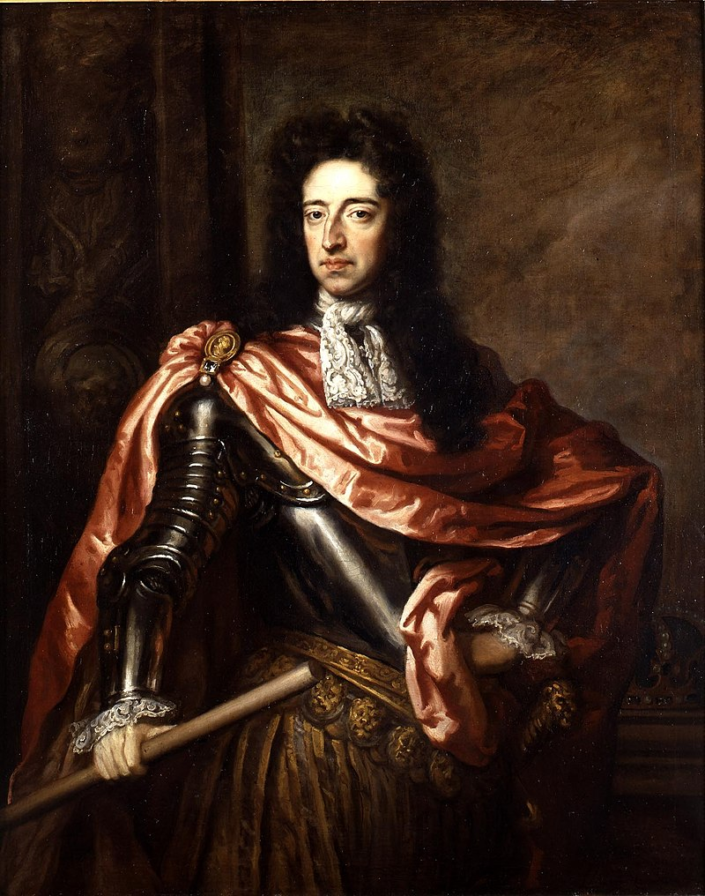
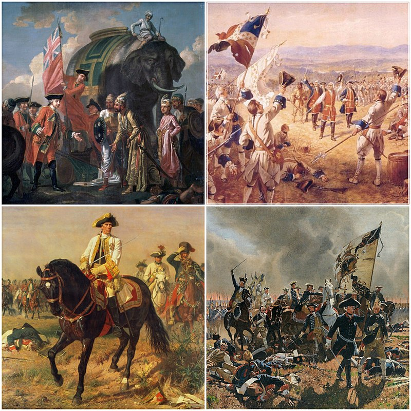
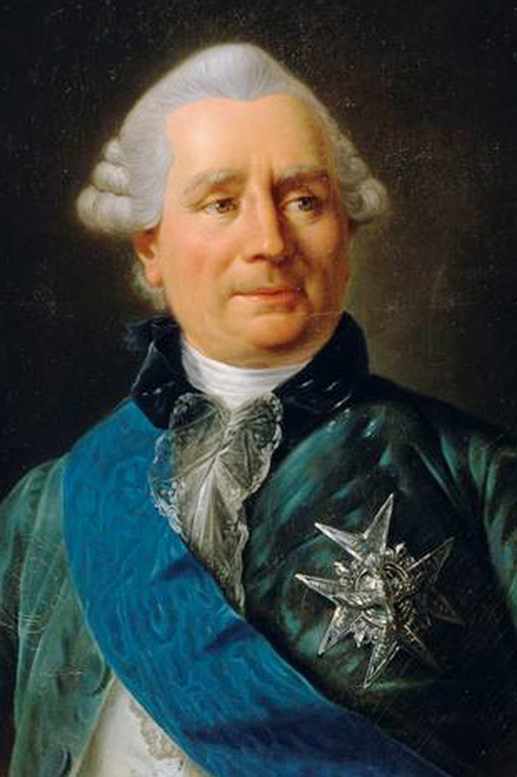

1812년 - 왜 나폴레옹은 러시아로 갔을까 (상)
게시: 2019-06-24T06:30:18+09:00
이제 우리는 1812년, 그 고통스러운 행군을 향해 출발합니다. 모든 사건은 뭔가 이유가 있었기 때문에 터집니다. 왜 나폴레옹은 자신의 파멸을 향해서 그 춥고 머나먼 땅으로 행군을 해야만 했었을까요 ? 이유는 많았습니다. 하지만 그 주된 이유는 두가지, 폴란드와 영국이었지요. 그 두가지 때문에, 지난 편에서 우리는 1810년 12월 31일, 알렉산드르가 프랑스산 비단과 와인에 관세를 부과하고 반대로 영국산 제품의 입항을 실질적으로 허락하는 칙령을 내리는 것을 보았습니다. 정말 나폴레옹은 러시아 원정이라는 바보짓을 피할 수 없었을까요 ? 제 블로그를 출입하시는 분들께서는 느끼셨겠습니다만, 나폴레옹은 원래부터 사람들이 흔히 생각하는 그런 전쟁광이 아니었습니다. 그가 일으킨 전쟁은 대부분 방어적 성격이 강했습니다. 예나-아우어슈테트에서 프로이센과 싸웠던 것도, 바그람에서 오스트리아와 싸웠던 것도 알고보면 모두 상대측이 먼저 선전포고를 한 것이었지요. 1811년 당시의 나폴레옹은 특히나 전쟁을 굳이 하고 싶지 않았습니다. 이제 40대에 접어든 그는 뇌하수체 이상 때문이라는 설이 있듯이 뭔가 건강이 좋지 않아 눈에 띄게 몸이 비대해졌고, 그 때문인지 부하들은 모두 나폴레옹이 전에 비해 결단력이 떨어지고 사람이 유순해진 것을 눈치채고 놀라고 있었습니다. 무엇보다 아들 '로마왕'을 낳고 나서는 이렇게 말할 정도로 기뻐하며 이제 자신이 이룬 제국의 보존을 우선 순위에 두려는 경향이 강했습니다. "제국은 칼로 건설되고 상속에 의해 유지된다." 게다가 나폴레옹은 자신의 권력 기반이 무력보다는 민중의 지지라는 것을 명확히 알고 있었습니다. 독수리 깃발을 앞세운 승리의 영광은 단지 그런 민중의 지지를 끌어내기 위한 도구에 불과했습니다. 나폴레옹은 프로이센을 격파한 뒤 거기서 빼앗은 영토 등으로 만든 베스트팔렌 왕국의 왕좌에 막내 동생 제롬을 앉히면서 아래와 같은 편지를 전달했습니다. "독일인들이 초조하게 기대하는 것은 귀족 태생이 아니더라도 재능만 있다면 너에게 발탁될 공평한 기회를 갖는 것과, 왕국 내의 가장 비천한 자들과 국왕 사이에 존재하는 모든 신분 장벽과 예속 상태가 철폐되는 거야... 나폴레옹 법전의 혜택, 통치 절차의 투명성, 그리고 배심원 제도가 네 왕정과 기존 왕정을 구별하는 특성이 되어야 해. 너에게 완전히 터놓고 이야기한다면 말이다, 네 왕정의 확장과 통합에는 나의 더 위대한 승리보다는 그런 것들이 더 중요한 역할을 할 것이라고 난 기대하고 있단다. 너의 백성들은 다른 왕정 하의 독일인들이 누리지 못하는 자유와 평등, 복지를 누려야 한다." 귀족들, 심지어 당시 부르조아 계급으로 불리던 시민 계급, 즉 요즘말로 중산층도 가끔은 돈 때문에 전쟁을 환영하는 경우가 있습니다만 사회 대부분을 차지하는 민중은 전쟁을 좋아하지 않습니다. 적의 총탄과 대포알을 몸으로 받아내며 산산조각 나야하는 것들이 바로 자신들의 아들들이기 때문에 그렇지요. 나폴레옹도 그걸 잘 알고 있었고, 그는 민중이 싫어하는 전쟁을 굳이 하고 싶지 않았습니다. 그러나 정확하게 보자면, 나폴레옹의 프랑스 제국은 민중의 국가라기보다는 부르조아 계급, 즉 시민 계급이 이끌고 나가던 나라였습니다. 프랑스 대혁명을 통해 앙시앵 레짐(ancien regime), 즉 구체제를 뒤엎은 시민 계급은 이제 신분이 아니라 재산과 실력에 의해 대우받고 기회가 주어지는 체제를 지지했습니다. 따라서 투표권도 일정 수준 이상의 재산을 가진 국민에게만 주어졌지요. 나폴레옹도 집권 기간 내내 사회 대부분을 차지하는 민중 세력보다는 교육을 제대로 받고 재산을 갖춘 중산층 소수 엘리트들을 우대하는 정책을 펼쳤습니다. 시민 계급이 원하는 것은 무엇보다 경제적 번영과 그를 지키기 위한 정치적 안정이었습니다. 경제적 번영과 정치적 안정에 가장 해로운 것이 전쟁입니다. 그런데도 나폴레옹은 1812년 러시아 원정을 떠났습니다. 그렇다는 것은 러시아 원정이 시민 계급의 이익에 부합하는 것이었다는 뜻입니다. 이게 어떻게 된 일이었을까요 ?

(네덜란드의 오렌지공 빌렘 Willem이 명예 혁명에 의해 영국왕 윌리엄 3세가 되면서, 그 전에도 좋지 않았던 프랑스와의 관계가 급격히 나빠집니다. 쫓겨난 영국왕 제임스 2세는 카톨릭으로서, 전통적 카톨릭 군주인 프랑스 루이 14세와의 관계가 좋았기 때문입니다.)
결국은 영국 때문이었습니다. 당시 프랑스와 영국은 제2의 100년 전쟁이라고 지칭되는 시대 속에 있었습니다. 1688년 명예 혁명에 의해 개신교였던 네덜란드의 윌리엄 공이 영국 왕위에 오르면서 시작된 영국과 프랑스의 본격적인 갈등 관계는 처음에는 개신교와 카톨릭의 종교적인 것에서 시작되었습니다. 그러나 이는 곧 아메리카 및 인도를 둘러싼 식민지 확보 경쟁, 즉 경제적인 갈등으로 전개되었습니다. 1756년부터 시작된 7년 전쟁과 1775년부터 시작된 미국 독립 전쟁에서 서유럽을 주도하던 이 두 나라의 경제적 이해 충돌은 매우 뜨거워졌습니다. 특히 과거의 전쟁처럼 어느 나라가 유럽 내 어느 특정 지역의 영토를 더 많이 차지하느냐 하는 것보다 누가 더 많은 생산 기지와 소비 시장을 확보하느냐로 관점이 옮겨가면서 이 두 나라의 갈등은 거의 공존 불가 수준으로 달아올랐습니다. 중세 시절이라면 이런 두 나라의 경쟁은 당연히 더 크고 비옥한 영토를 가진 프랑스가 우세할 수 밖에 없었습니다. 백년전쟁에서 영국이 초반에 우세했던 것도 알고 보면 당시엔 영국이 프랑스 내에 꽤 넓은 영토를 가지고 있었고 그 영토에서 나온 병력이 많았기 때문이었습니다. 그러나 결국 프랑스에게 밀려 유럽 내의 영토를 다 잃을 수 밖에 없었지요. 하지만 대포로 무장한 전열함이 큰 역할을 했던 해외 식민지 경쟁에서는 섬나라 영국이 절대적으로 유리했습니다. 결국 프랑스는 인도와 북아메리카의 식민지를 대부분 잃어야 했지요.

(7년 전쟁의 여러 전장의 모습입니다. 7년 전쟁은 가히 세계 전쟁이라 할 수 있어서, 그 전장은 유럽 뿐만 아니라 북아메리카, 인도, 북부 아프리카, 심지어 필리핀까지도 포함되어 있었습니다.)
서로에게 상처만 주었던 미국 독립전쟁이 끝난 뒤 이 두 나라 사이에는 잠깐 공존의 분위기가 무르익기도 했습니다. 미국 독립 전쟁에서 영국을 물먹이느라 재정을 탕진한 프랑스가 당장 농산물을 수출해야 하는 필요성과, 북미 식민지를 상실하는 바람에 자국산 공산품을 위한 새 수출 시장을 급히 찾아야 하는 영국의 이해가 맞아 떨어지면서 1786년 이 두 국가 사이에 관세를 대폭 낮추자는 에덴 조약 (Eden Treaty)이 맺어졌던 것입니다. 이때 프랑스 측의 책임자는 중농주의자였던 베르겐 백작(Charles Gravier, comte de Vergennes)이었고, 영국측 책임자는 아담 스미스의 국부론(Wealth of Nations, 1776년 출간)에 잔뜩 영향을 받은 오클랜드 남작 에덴(William Eden, 1st Baron Auckland)이었기 때문에, 상대적으로 영국산 공산품의 프랑스 시장에 대한 진입 장벽이 크게 낮아지게 되었습니다. 그러나 프랑스 측에서 보면 이 조약은 프랑스 토지 귀족들의 이익만 대변할 뿐, 주로 부르조아 시민 계급으로 구성된 프랑스의 대형 제조업자 및 상인들에게는 매우 불리한 것이었습니다. 일부 역사학자들은 이 에덴 조약으로 손해를 본 프랑스 부르조아 계급의 불만이 결국 프랑스 대혁명으로 분출되었다고 보기도 합니다. 어떻게 보면 신분제 철폐와 천부적 인권이라는 숭고한 이상 뒤에는 프랑스와 영국의 돈 싸움 문제가 있었던 것이라고 할 수 있지요.

(베르겐 백작 샤를 그라비에입니다. 이 분은 자신이 뭔 짓을 저지른 것인지 깨닫지 못하고 1787년에 fat & happy 상태로 편히 돌아가셨습니다.)
그런 경제 전쟁에서 프랑스가 내놓은 회심의 일격이 나폴레옹이라는 영웅이었습니다. 하지만 나폴레옹도 인간인 이상 날아서 도버 해협을 건널 수는 없었고 트라팔가에서 쓴 맛을 볼 수 밖에 없었지요. 그래서 나폴레옹이 내놓은 해법이 바로 진짜 무역 전쟁, 즉 대륙 봉쇄령이었습니다. 대륙 봉쇄령이 성공하려면 유럽 전역이 나폴레옹의 직접적인 영향력 하에 있어야 했었고, 실제로도 그랬습니다. 그러나 알고 보면 나폴레옹도 서부 유럽의 황제였을 뿐이었지요. 동부 유럽의 황제는 바로 로마 제국의 후예를 자처하는 러시아의 짜르 알렉산드르 1세였습니다. 대륙 봉쇄령이 성공하기 위해서는 유럽 대륙 서부 뿐만 아니라 동부까지 전체가 영국 상품에 대해 문을 닫아야 했습니다. 나폴레옹도 그런 사정을 다 알고 있었습니다. 그래서 나폴레옹은 처음부터 러시아와는 싸우기 보다는 협력을 원했습니다. 그래서 나온 것이 1807년의 틸지트(Tilsit) 조약이었습니다. 이 조약에서 젋은 알렉산드르를 구워삶은 나폴레옹은 그럴 이유가 전혀 없었던 러시아로 하여금 영국에게 선전포고를 하고 영국 상품에 대해 문을 닫게 만들었습니다. 이는 1805년 트라팔가 해전에서 입은 패배를 통쾌하게 뒤집는 나폴레옹의 멋진 승리였습니다. 나폴레옹이 러시아와는 협력을, 영국과는 전쟁을 원했던 것은 위에서 보셨다시피 궁극적으로는 나폴레옹 개인의 야망 때문은 아니었습니다. 상공업과 무역을 발전시키려는 프랑스 시민 계급의 입장에 있어서 제해권을 장악한데다 산업 혁명을 막 시작한 영국에게는 말살을 추구할 수 밖에 없었고, 농업 대국 러시아와는 협력하는 것이 당연했기 때문이었습니다. 그런 프랑스 시민 계급의 욕망을 그대로 유럽 권력 세계에 투영해준 것이 바로 나폴레옹이었고요. 따지고 보면 나폴레옹 자신이 토지에 기반을 둔 귀족이 아니라 본인의 실력으로 부를 쌓아가는 시민 계급 출신이라고 할 수 있었습니다. 나폴레옹은 코르시카 귀족 출신이라고는 해도 프랑스에서는 집도 절도 없는 한낱 외국 출신 하급 장교에 불과했으니까요. 실제로 나폴레옹은 패전 국가에게 전쟁 배상금을 뜯어낼 때 항상 토지보다는 정금(specie), 즉 금화와 은화를 요구했고, 비엔나를 점령하고서는 왜 기회에 오스트리아에 프랑스산 비단과 도자기 같은 상품을 무관세로 판매하지 않느냐고 관료들을 닥달했습니다. 나폴레옹은 황제에 등극할 때 공식 칭호를 과거 부르봉 왕가가 Roi de France (프랑스의 국왕)이라고 했던 것처럼 Empereur de France (프랑스의 황제)라고 하지 않고 Empereur des Français (프랑스인들의 황제)라고 했지요. 이는 프랑스라는 국가에 당연히 있어야 하는 왕이라는 개념보다는, 프랑스 국민들의 지지를 받는 통치자라는 뜻으로 정한 것입니다. 그러나 실제로 그의 속성을 보면 Empereur des Bourgeois Français (프랑스 시민 계급의 황제)라고 할 수 있었습니다. 하지만 나폴레옹이 황제라고는 해도 절대 권력자가 아니었듯이, 알렉산드르로 전제군주이긴 했으나 무소불위의 권력을 휘두르는 독재자는 아니었습니다. 나폴레옹의 뒤에 시민 계급이 있었듯이, 짜르 알렉산드르의 뒤에도 서있는 이들이 있었습니다. 바로 농노제에 기반을 둔 러시아의 토지 귀족들이었습니다.
Source : The Life of Napoleon Bonaparte, by William Milligan Sloane https://en.wikipedia.org/wiki/Second_Hundred_Years%27_War 1812 Napoleon's Fatal March on Moscow by Adam Zamoyski